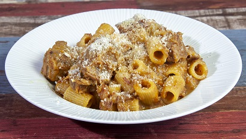

La pasta alla genovese e' un grande classico della tradizione napoletana, presenta un ricco e profumato sugo a base di carne e tantissime cipolle, fatto cuocere a fuoco lentissimo per diverse ore. Con la cottura prolungata, le cipolle si sciolgono fino a trasformarsi in una crema dolce e vellutata dal colore dorato, che avvolge perfettamente la pasta. Nonostante il nome richiami la città di Genova, si tratta di un piatto 100% napoletano, nato probabilmente nei porti di Napoli durante il Rinascimento per mano di cuochi genovesi o per l'uso di ingredienti tipici dei naviganti.